GitHub Actions + macOS + iPhone
Aplikacja na iPhonie.
Instalacja przez kabel z Maca.
Zbuduj w chmurze. Pobierz wybrany build. Wgraj przez USB.
Co przygotowujemy
GitHub Actions zbuduje podpisaną aplikację, a Mac pobierze ją i zainstaluje na iPhonie przez USB. Kolejne instalacje wykonasz jedną komendą, wybierając najnowszy dostępny build albo konkretny commit.
Potrzebujesz Maca, iPhone’a z kablem do przesyłania danych, aktywnego Apple Developer Program oraz repozytorium z projektem iOS. App ID przygotujesz w części 1. Jeśli masz konfigurację z części 2: TestFlight, wykorzystamy istniejące App ID i zmienne repozytorium.
Przykłady używają jankowalski/testowa-apka, projektu TestowaApka i Bundle ID pl.jankowalski.testowaapka. Zastąp je swoimi danymi. Dane na screenach są przykładowe; identyfikatorów urządzeń nie kopiuj.
Dołączony workflow jest przeznaczony dla projektu generowanego przez XcodeGen z pliku project.yml w katalogu głównym. Zakłada jedną aplikację i zgodne nazwy projektu, schematu oraz produktu. Własny projekt z workspace, rozszerzeniami lub innymi nazwami wymaga dostosowania polecenia build i podpisywania.
Certyfikat: co można wykorzystać ponownie
| Plik / element | Do czego służy |
|---|---|
CertificateSigningRequest.certSigningRequest | CSR, czyli wniosek o certyfikat. Nie jest certyfikatem ani kluczem prywatnym. |
development.cer | Certyfikat Apple Development wystawiony przez Apple. |
DevelopmentCertificate.p12 | Eksport certyfikatu razem z kluczem prywatnym, chroniony hasłem. |
| Profil Development | Łączy App ID, certyfikat i zarejestrowane urządzenia. |
Masz materiały z tutorialu TestFlight? Możesz ponownie użyć pliku CSR, jeśli na Macu nadal masz odpowiadający mu klucz prywatny. Przejdź wtedy do wystawienia Apple Development. Certyfikat Apple Distribution z TestFlight pełni inną rolę i nie zastępuje Apple Development w tym workflow.
Jeśli masz już ważny Apple Development z kluczem prywatnym dla tego zespołu, nie twórz kolejnego: przejdź do eksportu .p12. Jeśli nie masz CSR albo odpowiadającego mu klucza, wykonaj następny krok.
Nie masz CSR? Utwórz go na Macu
Otwórz aplikację Dostęp do pęku kluczy, np. wyszukując ją w Spotlight. Z górnego menu wybierz Dostęp do pęku kluczy → Asystent certyfikatów → Wniosek o wydanie certyfikatu z urzędu certyfikacji….
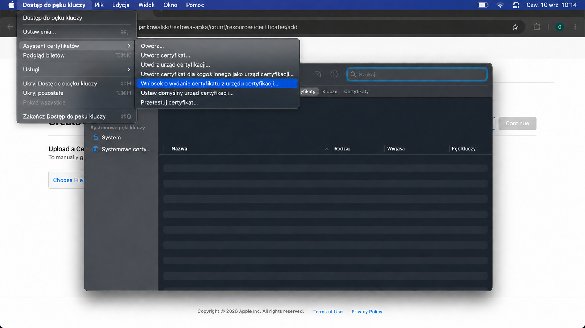
Wpisz swój adres e-mail i nazwę powszechną, np. imię i nazwisko. Pole Adres email CA zostaw puste. Zaznacz zachowane na dysku, kliknij Dalej i zapisz CertificateSigningRequest.certSigningRequest na Biurku. Klucz prywatny zostanie w pęku kluczy tego Maca.
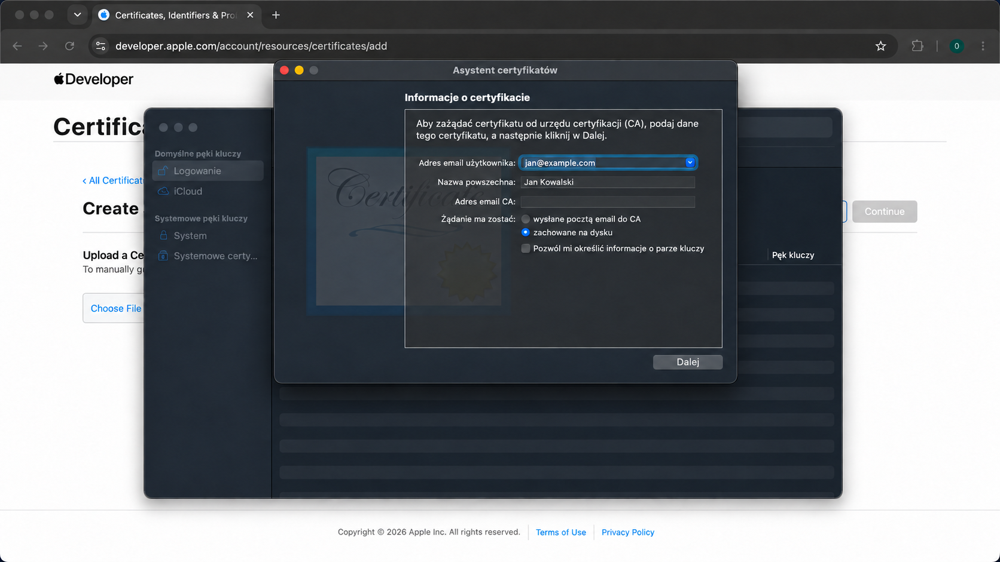
Wystaw Apple Development
Otwórz Certificates w Apple Developer. Kliknij +, wybierz Apple Development i kliknij Continue.
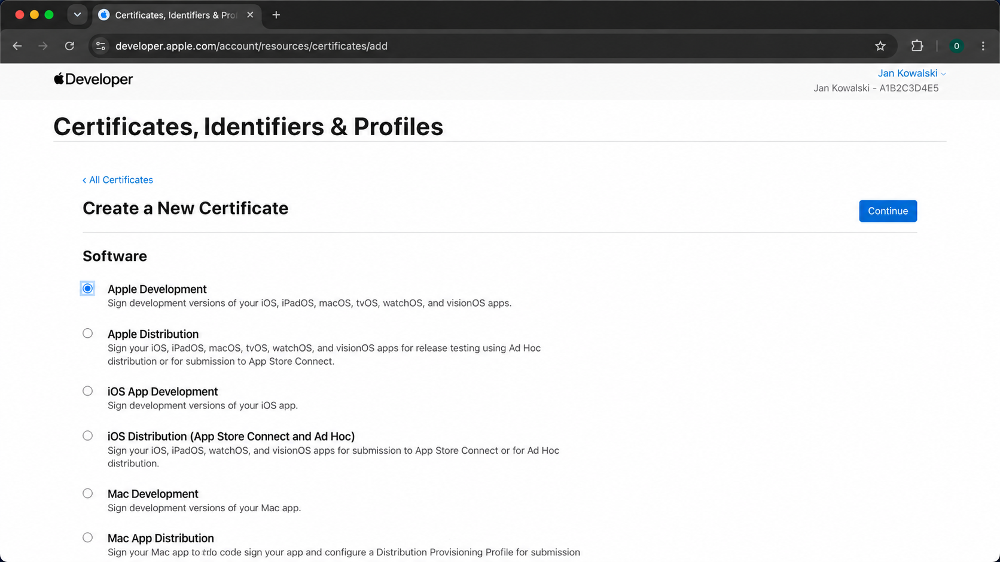
Kliknij Choose File i wskaż zapisany lub zachowany wcześniej plik CSR. Kliknij Continue, a po wystawieniu certyfikatu Download. Pobrany plik to zwykle development.cer.
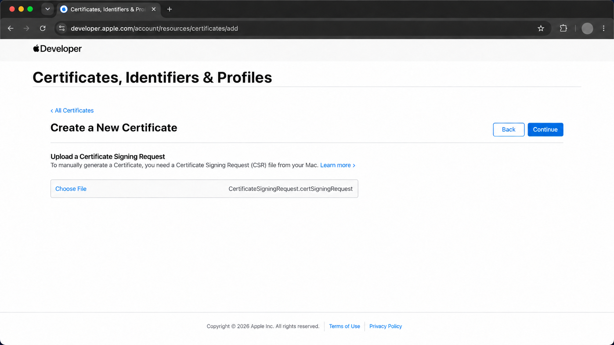
Otwórz development.cer dwuklikiem i dodaj do pęku Logowanie. W Dostępie do pęku kluczy wybierz Moje certyfikaty, wyszukaj „development” i rozwiń certyfikat. Powinien mieć pod sobą klucz prywatny.
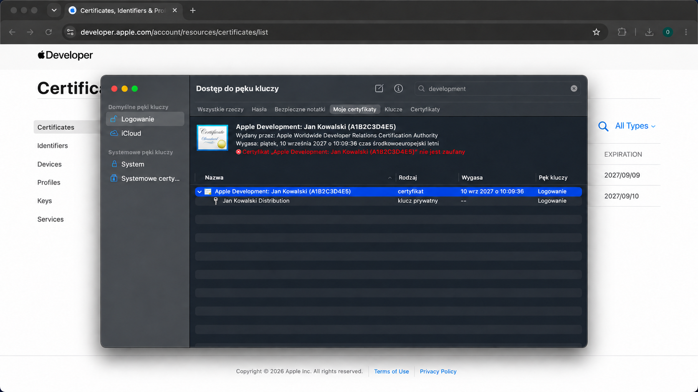
Nazwa klucza może zawierać „Distribution”, jeśli powstał przy wcześniejszym CSR. Liczy się jego dopasowanie do certyfikatu. Brak klucza oznacza, że sam plik .cer nie wystarczy do podpisywania: użyj Maca z właściwym kluczem lub utwórz nowy CSR i certyfikat.
Jeśli widzisz komunikat o braku zaufania, nie ustawiaj ręcznie „Zawsze ufaj”. Sprawdź datę systemu oraz łańcuch certyfikatów Apple, zwłaszcza certyfikat pośredni WWDR. Pomoc Apple dotycząca WWDR.
Dodatkowe ekrany tego kroku
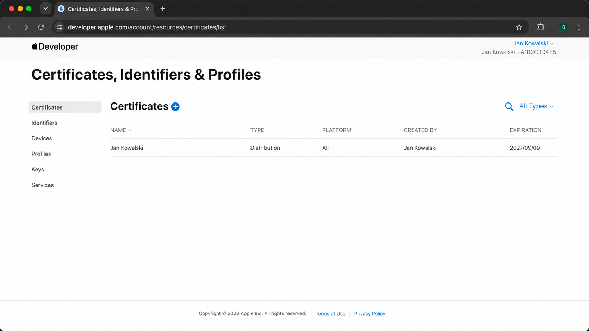
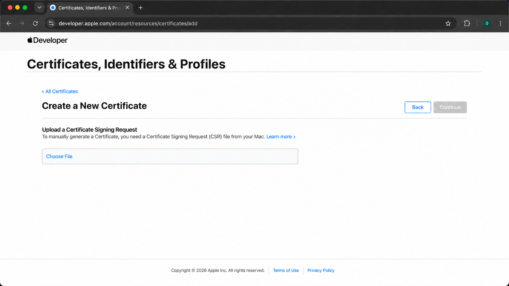
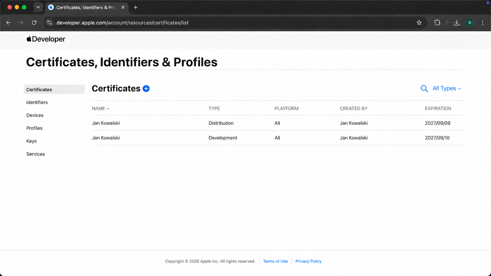
Wyeksportuj certyfikat i klucz do .p12
W Moje certyfikaty kliknij prawym przyciskiem certyfikat Apple Development z dopasowanym kluczem i wybierz Eksportuj….
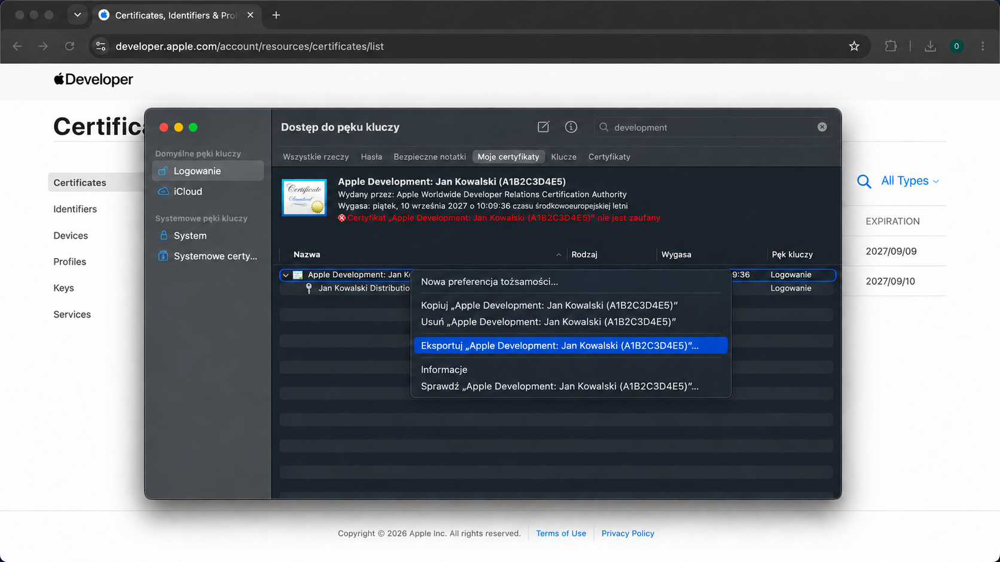
Zapisz na Biurku jako DevelopmentCertificate.p12. Format: Wymiana danych osobistych (.p12). Jeśli .p12 jest niedostępne, sprawdź obecność klucza prywatnego.
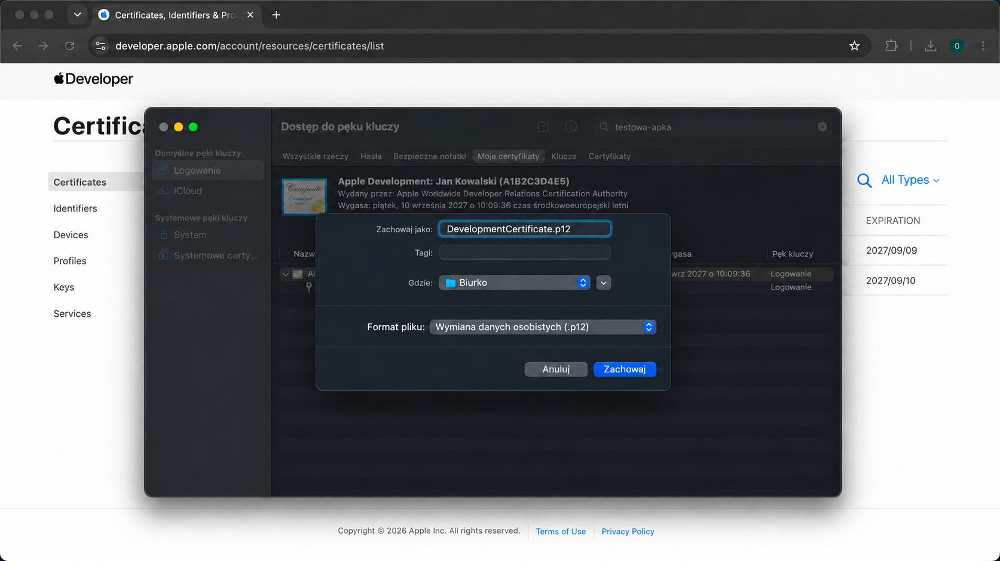
Ustaw hasło chroniące eksport i zapamiętaj je. Będzie potrzebne w GitHub Actions. Następne okno może poprosić o hasło logowania do Maca, aby zezwolić na eksport klucza. To dwa różne hasła.
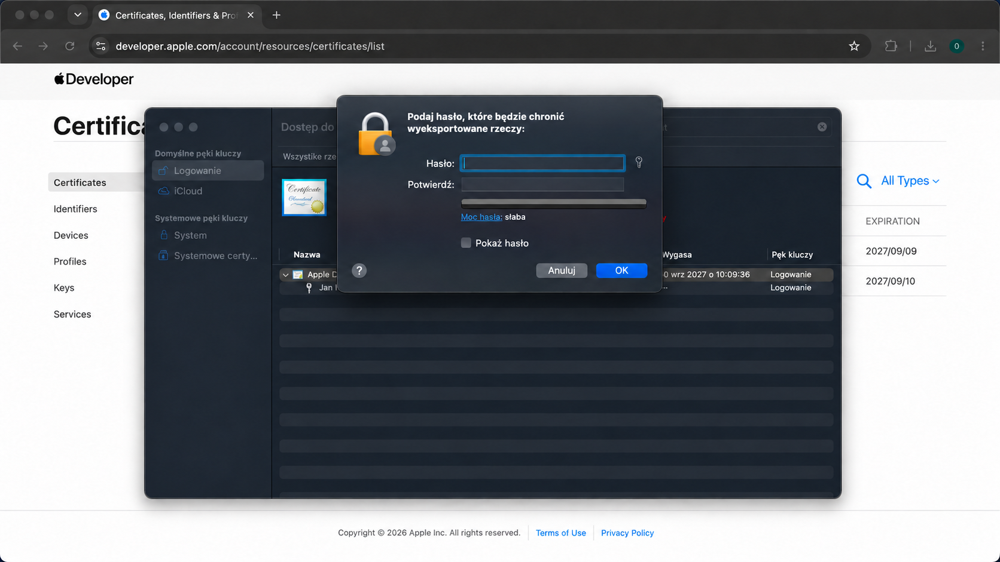
Dodaj certyfikat do GitHub Secrets
W Terminalu na Macu wykonaj:
base64 -i ~/Desktop/DevelopmentCertificate.p12 | pbcopyPolecenie koduje plik i kopiuje wynik do schowka. Nic nie musi pojawić się w Terminalu. Jeśli zapisałeś plik w innym miejscu, zmień ścieżkę.
W repozytorium wejdź w Settings → Secrets and variables → Actions → Secrets → New repository secret.
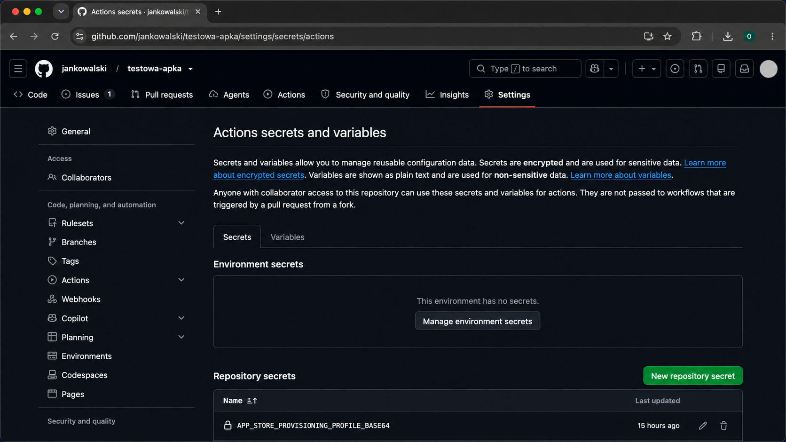
| Name | Secret |
|---|---|
DEVICE_CERTIFICATE_P12_BASE64 | Wklej całą zawartość schowka. |
DEVICE_CERTIFICATE_PASSWORD | Wpisz hasło ustawione przy eksporcie .p12, bez kodowania Base64. |
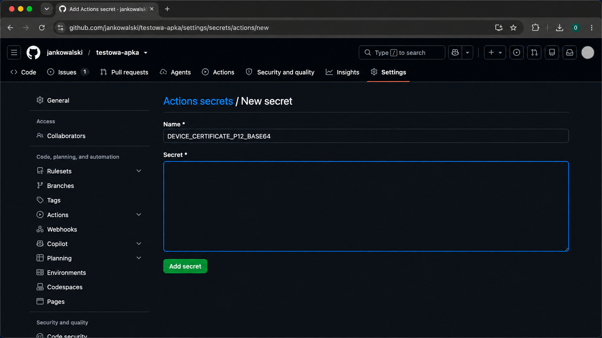
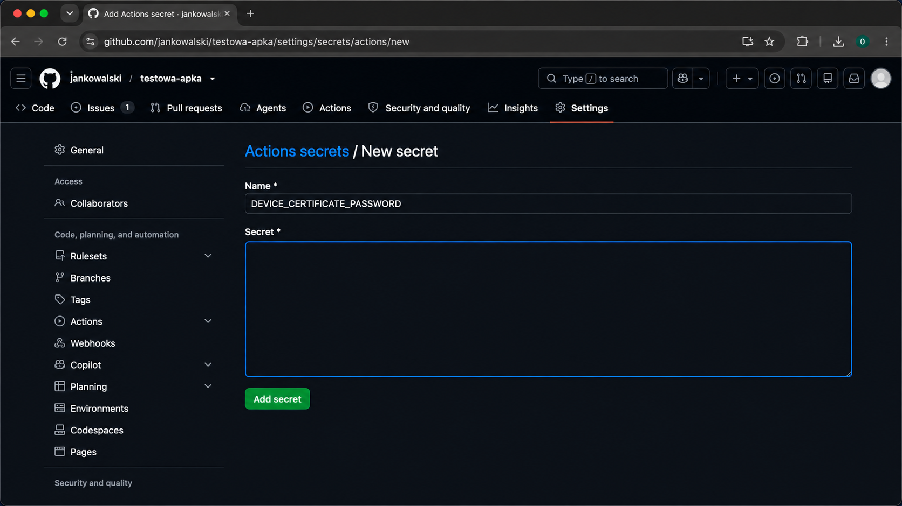
Dla każdego wpisu kliknij Add secret. Base64 nie szyfruje danych. Zawartości .p12 i sekretów nie dodawaj do kodu, promptu ani screenshotów.
Podłącz iPhone’a i skopiuj UDID
Podłącz iPhone’a kablem do Maca, odblokuj go i zaakceptuj Zaufaj temu komputerowi, jeśli pojawi się taki komunikat. W Finderze wybierz iPhone’a w sekcji Miejsca.
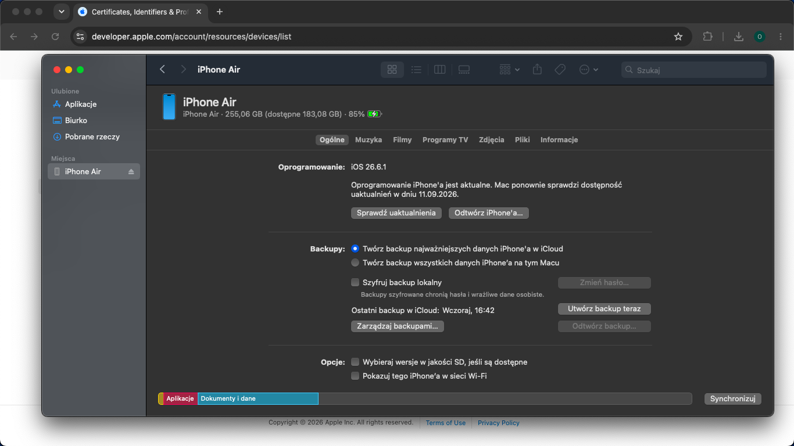
Kliknij wiersz informacji bezpośrednio pod nagłówkiem z nazwą urządzenia „iPhone Air” - ten, który początkowo pokazuje model, pojemność i baterię. Klikaj do momentu wyświetlenia UDID. To linia pod nazwą, a nie sama nazwa iPhone’a.
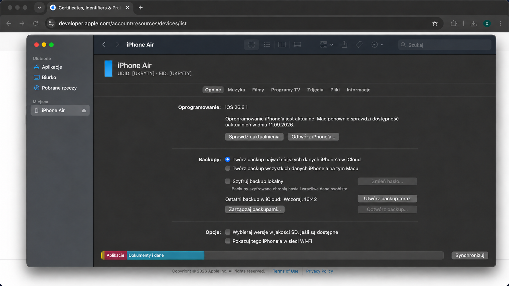
Skopiuj wartość UDID, np. przez menu pod prawym przyciskiem na tym wierszu. Nie kopiuj EID. Używamy nazwy UDID, nie UUID. Wartości na ilustracji zostały zastąpione fikcyjnymi.
Zarejestruj urządzenie w Apple Developer
Otwórz Devices. Jeśli Twój iPhone o tym UDID już jest zarejestrowany i aktywny, przejdź do profilu. Nie usuwaj ani nie wyłączaj go tylko po to, żeby odtworzyć tutorial.
Dla nowego urządzenia kliknij +. W sekcji Register a Device wybierz platformę obejmującą iOS, wpisz rozpoznawalną Device Name i wklej swój Device ID (UDID). Kliknij Continue.
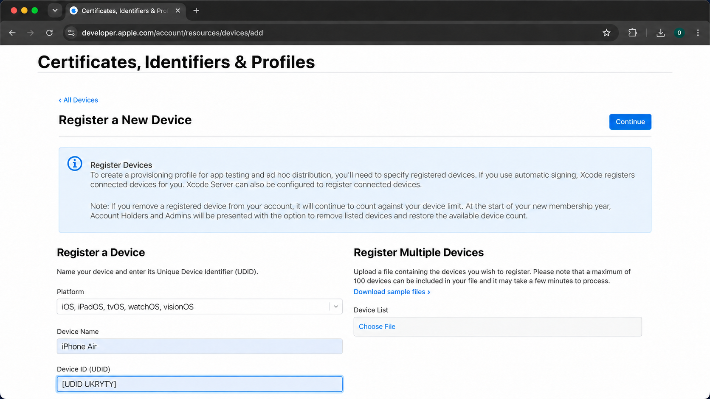
Porównaj podsumowanie z UDID w Finderze, znak po znaku. Dopiero wtedy kliknij Register. Nazwa urządzenia nie decyduje o jego dopasowaniu - robi to UDID.
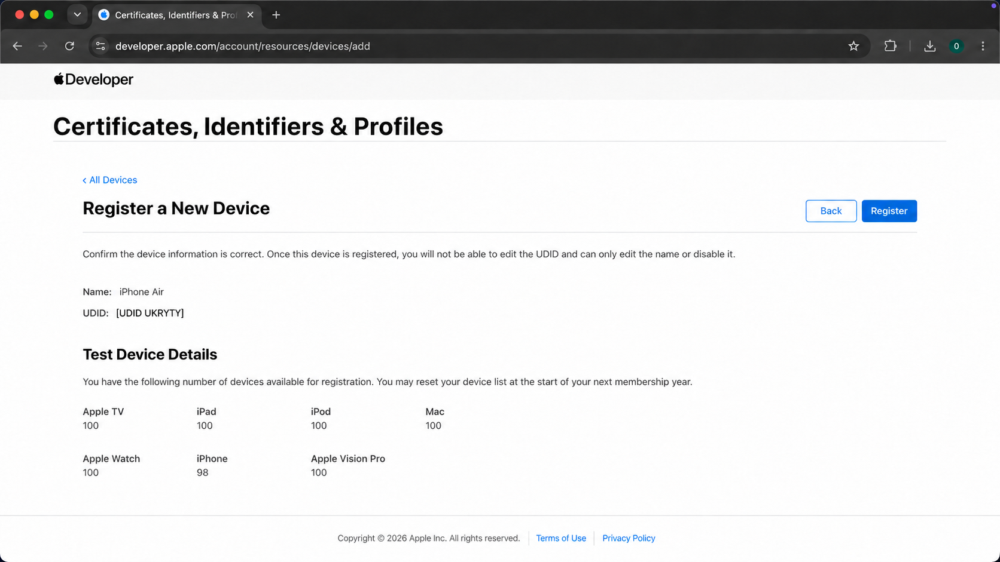
Apple pozwala wyłączać urządzenia w trakcie roku członkostwa, ale nie odzyskuje to miejsca w limicie. Wyłączenie urządzenia unieważnia zawierające je profile. Zasady Apple.
Dodatkowe ekrany tego kroku
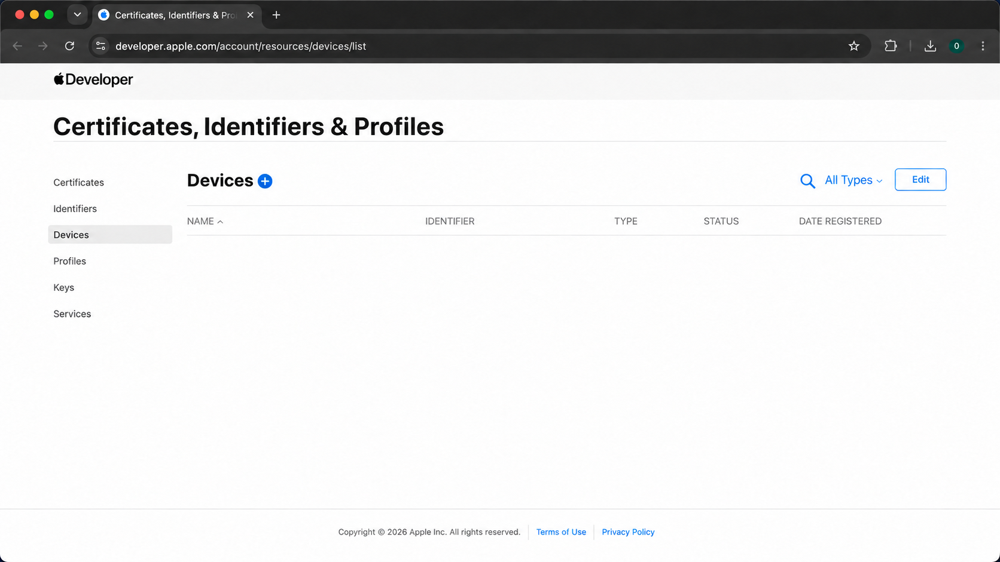
Utwórz profil iOS App Development
Otwórz Profiles i kliknij +. Istniejący profil App Store zostaw dla TestFlight. Teraz wybierz iOS App Development i Continue.
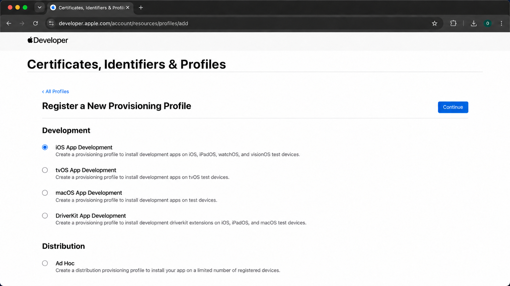
Wybierz App ID dokładnie zgodne z Bundle ID projektu. Nie twórz nowego identyfikatora dla tej samej aplikacji. Pozostaw Offline support: No; wariant offline ma tylko 7 dni ważności. Kliknij Continue.
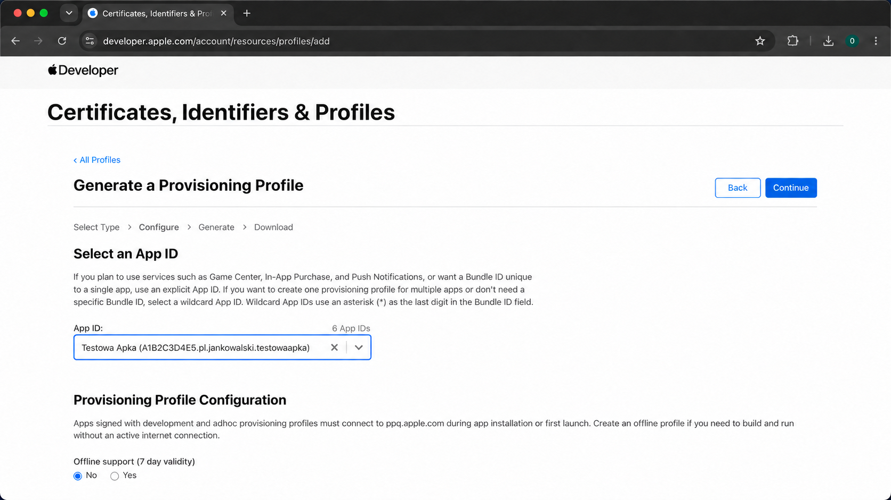
Zaznacz certyfikat Apple Development, który wyeksportowano do .p12 i dodano do sekretu. Kliknij Continue.
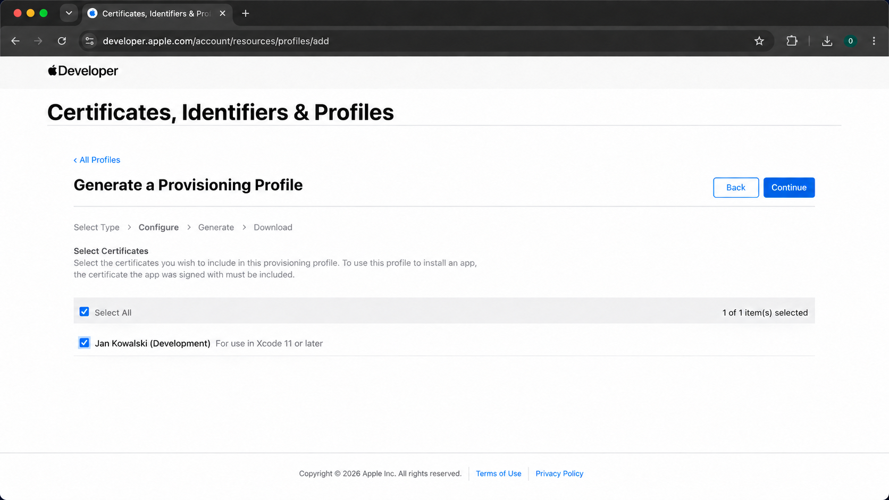
Zaznacz swój zarejestrowany iPhone. Możesz dodać więcej urządzeń, jeśli chcesz na nich instalować tę aplikację. Kliknij Continue.
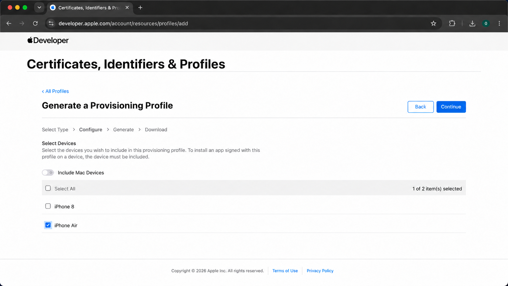
Nadaj nazwę, np. TestowaApka-Development. Sprawdź typ Development, App ID, certyfikat i urządzenia. Kliknij Generate.
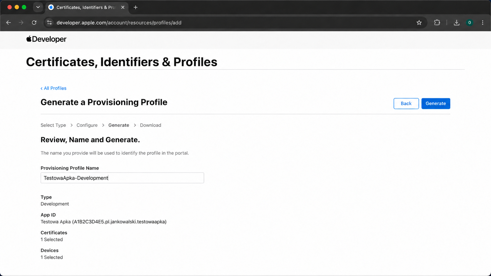
Kliknij Download. Przenieś plik na Biurko. W przykładzie nazywa się TestowaApkaDevelopment.mobileprovision; Apple może usunąć myślnik z nazwy pobieranego pliku. Używaj rzeczywistej nazwy pobranego pliku.
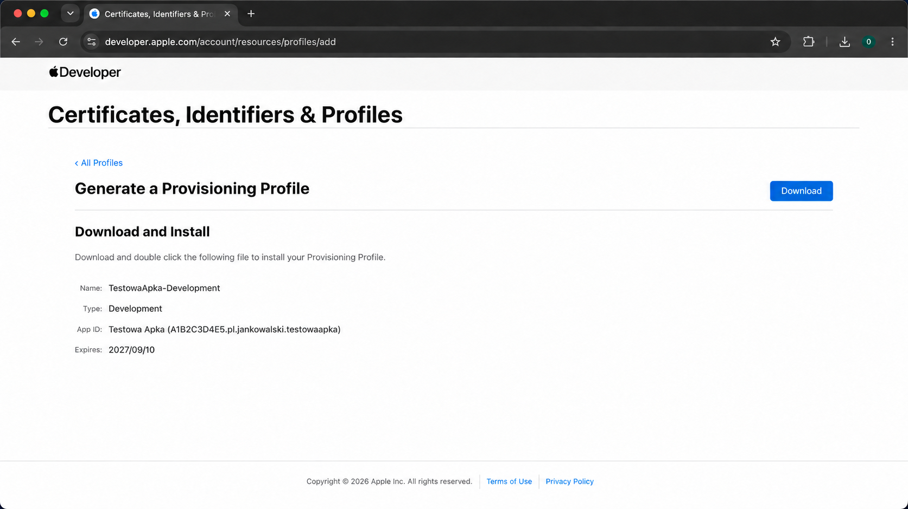
Instrukcja Apple: profil Development.
Dodatkowe ekrany tego kroku
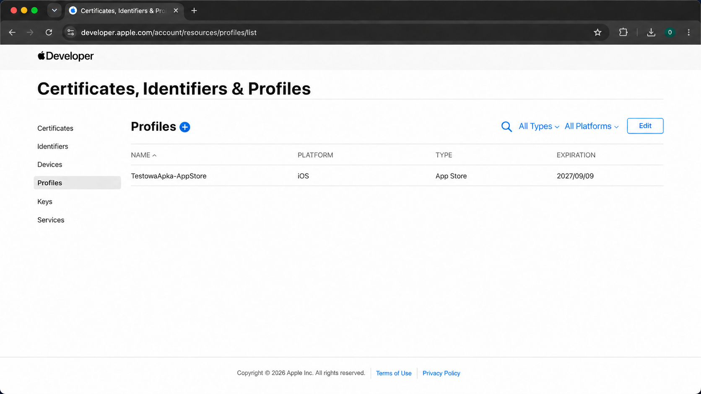
Dodaj profil i sprawdź Variables
base64 -i ~/Desktop/TestowaApkaDevelopment.mobileprovision | pbcopyW GitHub dodaj Repository secret o nazwie DEVICE_PROVISIONING_PROFILE_BASE64. Jako wartość wklej cały schowek i kliknij Add secret.
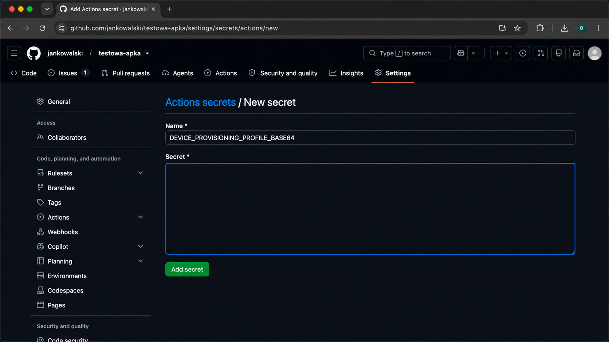
To inny profil niż APP_STORE_PROVISIONING_PROFILE_BASE64. Profil App Store służy do TestFlight, a Development do instalacji na wskazanych urządzeniach. Zmiana samej nazwy sekretu nie zmienia typu profilu.
W zakładce Variables sprawdź dwie zmienne. Jeśli po tutorialu TestFlight już mają właściwe wartości, nie twórz duplikatów.
| Repository variable | Wartość |
|---|---|
APPLE_TEAM_ID | Twój 10-znakowy Team ID z konta Apple Developer. |
XCODE_PROJECT | Nazwa projektu i schematu, bez .xcodeproj, np. TestowaApka. W tym szablonie także nazwa produktu .app. |
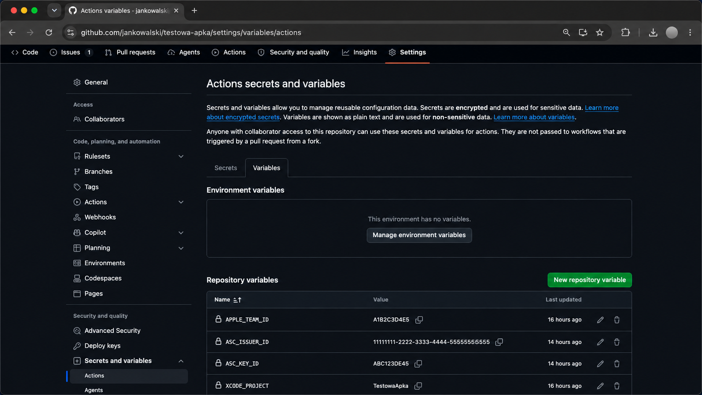
Zmienne ASC_ISSUER_ID i ASC_KEY_ID należą do wysyłania przez TestFlight. Ten workflow ich nie używa.
Dodaj workflow i zbuduj artefakt
W swoim repozytorium dodaj plik pod dokładną ścieżką .github/workflows/device-build.yml. Pobierz workflow. Dodaj też skrypt instalacyjny jako scripts/install-latest-device-build.sh. Oba pliki są też w katalogu code tego tutorialu.
Przed commitem sprawdź, czy project.yml generuje projekt i schemat zgodne z XCODE_PROJECT, a Bundle ID pasuje do profilu. Szablon zakłada pojedynczy produkt .app o tej samej nazwie. Jeśli projekt nie używa XcodeGen, dostosuj etap generowania zamiast dodawać fikcyjny plik konfiguracji.
Zapisz commit i wyślij go do repozytorium. Workflow uruchamia się po pushu do main i gałęzi pasujących do [0-9]*/**. Jeśli domyślna gałąź ma inną nazwę, zmień filtr. Możesz też uruchomić go ręcznie: Actions → Build signed iPhone artifact → Run workflow, wybierz gałąź i zatwierdź. Ręczne uruchomienie wymaga obecności workflow na gałęzi domyślnej.
Otwórz uruchomienie i poczekaj na zakończenie. W Artifacts pojawi się device-app zawierający device-app.zip z podpisaną aplikacją. Build wykonuje runner macOS w GitHub Actions. Nie wysyła on aplikacji do App Store Connect.
Artefakt jest przypisany do konkretnego uruchomienia workflow, a to uruchomienie wskazuje commit przez head_sha. Skrypt pobiera właśnie ten artefakt. SHA nie jest numerem uruchomienia ani nazwą pliku workflow. Retencja ustawiona w szablonie to 90 dni, w granicach polityki repozytorium.
Pokaż pełny workflow
name: Build signed iPhone artifact
on:
push:
branches:
- main
- '[0-9]*/**'
workflow_dispatch:
permissions:
contents: read
env:
FORCE_JAVASCRIPT_ACTIONS_TO_NODE24: true
XCODE_PROJECT: ${{ vars.XCODE_PROJECT }}
APPLE_TEAM_ID: ${{ vars.APPLE_TEAM_ID }}
jobs:
device-build:
runs-on: macos-latest
timeout-minutes: 30
steps:
- name: Checkout
uses: actions/checkout@v5
- name: Validate repository variables
run: |
[[ "$XCODE_PROJECT" =~ ^[A-Za-z0-9_-]+$ ]] || { echo "Set XCODE_PROJECT to the project and scheme name (without .xcodeproj)"; exit 1; }
[[ "$APPLE_TEAM_ID" =~ ^[A-Z0-9]{10}$ ]] || { echo "Set APPLE_TEAM_ID"; exit 1; }
- name: Install XcodeGen
run: |
brew untap aws/tap >/dev/null 2>&1 || true
brew install xcodegen
- name: Generate Xcode project
run: xcodegen generate
- name: Prepare signing assets
env:
DEVICE_CERTIFICATE_P12_BASE64: ${{ secrets.DEVICE_CERTIFICATE_P12_BASE64 }}
DEVICE_CERTIFICATE_PASSWORD: ${{ secrets.DEVICE_CERTIFICATE_PASSWORD }}
DEVICE_PROVISIONING_PROFILE_BASE64: ${{ secrets.DEVICE_PROVISIONING_PROFILE_BASE64 }}
run: |
umask 077
CERTIFICATE_PATH="$RUNNER_TEMP/device-signing.p12"
PROFILE_PATH="$RUNNER_TEMP/${XCODE_PROJECT}.mobileprovision"
PROFILE_PLIST_PATH="$RUNNER_TEMP/${XCODE_PROJECT}-profile.plist"
# Decode the binary signing files stored as base64 GitHub secrets.
printf '%s' "$DEVICE_CERTIFICATE_P12_BASE64" | base64 --decode > "$CERTIFICATE_PATH"
printf '%s' "$DEVICE_PROVISIONING_PROFILE_BASE64" | base64 --decode > "$PROFILE_PATH"
# Fail early with a useful message if a secret was empty or decoded incorrectly.
test -s "$CERTIFICATE_PATH" || { echo "Decoded .p12 certificate is empty"; exit 1; }
test -s "$PROFILE_PATH" || { echo "Decoded provisioning profile is empty"; exit 1; }
# A .mobileprovision file is a CMS container. OpenSSL reliably extracts the embedded plist
# on GitHub-hosted macOS runners, where `security cms` can fail depending on runner version.
openssl smime \
-inform der \
-verify \
-noverify \
-in "$PROFILE_PATH" \
-out "$PROFILE_PLIST_PATH"
PROFILE_NAME=$(/usr/libexec/PlistBuddy -c 'Print :Name' "$PROFILE_PLIST_PATH")
PROFILE_UUID=$(/usr/libexec/PlistBuddy -c 'Print :UUID' "$PROFILE_PLIST_PATH")
# Install the provisioning profile where Xcode can resolve it during manual signing.
PROFILES_DIR="$HOME/Library/MobileDevice/Provisioning Profiles"
mkdir -p "$PROFILES_DIR"
cp "$PROFILE_PATH" "$PROFILES_DIR/$PROFILE_UUID.mobileprovision"
echo "DEVICE_PROFILE_NAME=$PROFILE_NAME" >> "$GITHUB_ENV"
KEYCHAIN_PATH="$RUNNER_TEMP/device-build.keychain-db"
KEYCHAIN_PASSWORD="$(uuidgen)"
# Import the reusable Apple Development certificate into a temporary CI keychain.
security create-keychain -p "$KEYCHAIN_PASSWORD" "$KEYCHAIN_PATH"
security set-keychain-settings -lut 21600 "$KEYCHAIN_PATH"
security unlock-keychain -p "$KEYCHAIN_PASSWORD" "$KEYCHAIN_PATH"
security import "$CERTIFICATE_PATH" \
-P "$DEVICE_CERTIFICATE_PASSWORD" \
-A \
-t cert \
-f pkcs12 \
-k "$KEYCHAIN_PATH"
security set-key-partition-list \
-S apple-tool:,apple:,codesign: \
-s \
-k "$KEYCHAIN_PASSWORD" \
"$KEYCHAIN_PATH"
security list-keychains -d user -s "$KEYCHAIN_PATH" login.keychain-db
- name: Build signed app for registered iPhone
env:
APPLE_TEAM_ID: ${{ vars.APPLE_TEAM_ID }}
run: |
xcodebuild \
-project "$XCODE_PROJECT.xcodeproj" \
-scheme "$XCODE_PROJECT" \
-configuration Release \
-destination 'generic/platform=iOS' \
-archivePath "$RUNNER_TEMP/${XCODE_PROJECT}.xcarchive" \
DEVELOPMENT_TEAM="$APPLE_TEAM_ID" \
CODE_SIGN_STYLE=Manual \
CODE_SIGN_IDENTITY="Apple Development" \
PROVISIONING_PROFILE_SPECIFIER="$DEVICE_PROFILE_NAME" \
CURRENT_PROJECT_VERSION="$GITHUB_RUN_NUMBER" \
clean archive
- name: Package signed app
run: |
APP_PATH="$RUNNER_TEMP/${XCODE_PROJECT}.xcarchive/Products/Applications/${XCODE_PROJECT}.app"
ZIP_PATH="$RUNNER_TEMP/device-app.zip"
test -d "$APP_PATH"
ditto -c -k --sequesterRsrc --keepParent "$APP_PATH" "$ZIP_PATH"
echo "DEVICE_ZIP_PATH=$ZIP_PATH" >> "$GITHUB_ENV"
- name: Upload signed app artifact
uses: actions/upload-artifact@v4
with:
name: device-app
path: ${{ env.DEVICE_ZIP_PATH }}
if-no-files-found: error
retention-days: 90
compression-level: 0
- name: Clean signing assets
if: always()
run: |
security delete-keychain "$RUNNER_TEMP/device-build.keychain-db" 2>/dev/null || true
rm -f "$RUNNER_TEMP/device-signing.p12" "$RUNNER_TEMP/${XCODE_PROJECT}.mobileprovision" "$RUNNER_TEMP/${XCODE_PROJECT}-profile.plist"
Przygotuj narzędzia na Macu
Otwórz Terminal i sprawdź, co już masz:
command -v gh
xcrun --find devicectl
command -v ios-deployBrak ścieżki lub błąd oznacza, że dane narzędzie nie jest dostępne. Potrzebujesz gh oraz jednego instalatora: devicectl albo ios-deploy.
| Co masz | Co robisz |
|---|---|
| gh + devicectl | Przejdź dalej. Homebrew i ios-deploy nie są potrzebne. |
| gh + ios-deploy, bez devicectl | Przejdź dalej. Skrypt użyje ios-deploy. |
| devicectl, ale brak gh | Zainstaluj tylko GitHub CLI. |
| Brak obu instalatorów | Zainstaluj ios-deploy przez Homebrew; doinstaluj gh, jeśli go brakuje. |
devicectl jest dostarczane z nowszym Xcode. Same Command Line Tools go nie zawierają. Jeśli masz Xcode, ale aktywny katalog to /Library/Developer/CommandLineTools, sprawdź xcode-select -p. Dla Xcode w standardowej lokalizacji możesz wybrać go poleceniem:
sudo xcode-select --switch /Applications/Xcode.app/Contents/Developer
xcrun --find devicectlWykonuj zmianę tylko, jeśli Xcode faktycznie jest tam zainstalowany. Jeśli nie masz Xcode, skorzystaj z gałęzi ios-deploy. Zgodność ios-deploy zależy od wersji iOS i narzędzia; wykrycie urządzenia samo w sobie nie gwarantuje udanej instalacji. W przebiegu tej instrukcji instalacja przez ios-deploy została sprawdzona na fizycznym iPhonie.
Nie masz Homebrew?
Jeśli potrzebujesz go do instalacji brakujących narzędzi, użyj polecenia z oficjalnej strony Homebrew:
/bin/bash -c "$(curl -fsSL https://raw.githubusercontent.com/Homebrew/install/HEAD/install.sh)"Przeczytaj komunikaty instalatora i wykonaj jego Next steps, w szczególności polecenia dodające Homebrew do PATH. Następnie otwórz nowy Terminal i sprawdź brew --version. Zainstaluj tylko brakujące pakiety:
brew install gh
brew install ios-deployDruga komenda jest potrzebna tylko bez devicectl i bez istniejącego ios-deploy. Samo gh możesz też pobrać bez Homebrew z oficjalnych wydań GitHub CLI.
Zaloguj GitHub CLI i sprawdź telefon
gh auth statusJeśli konto jest zalogowane i ma dostęp do repozytorium, nic nie zmieniaj. W przeciwnym razie uruchom:
gh auth loginWybierz GitHub.com, HTTPS i logowanie przez przeglądarkę. Zaloguj konto z dostępem do repozytorium i jego artefaktów. Potwierdź wynik ponownie przez gh auth status. Nie wklejaj tokenu do rozmowy.
Podłącz i odblokuj iPhone’a. Dla ios-deploy sprawdź:
ios-deploy --detectDla devicectl użyj:
xcrun devicectl list devicesNa iPhonie włącz Ustawienia → Prywatność i ochrona → Tryb dewelopera. Jeśli system poprosi, uruchom telefon ponownie i potwierdź włączenie. Gdy opcja nie jest widoczna, sprawdź parowanie urządzenia z narzędziami deweloperskimi. Tryb dewelopera w dokumentacji Apple.
Pobierz skrypt i zainstaluj build
Pobierz install-latest-device-build.sh i przenieś na Biurko. Możesz też pobrać jego wersję ze swojego repozytorium, po dodaniu pliku w kroku 11:
gh api repos/jankowalski/testowa-apka/contents/scripts/install-latest-device-build.sh \
-H "Accept: application/vnd.github.raw+json" \
> ~/Desktop/install-latest-device-build.shZastąp jankowalski/testowa-apka swoim repozytorium. Po udanym pobraniu nadaj uprawnienie do uruchamiania:
chmod +x ~/Desktop/install-latest-device-build.shJeśli masz devicectl, ustaw urządzenie dla bieżącej sesji Terminala. Wpisz jego nazwę lub identyfikator z devicectl list devices:
export DEVICE_ID="iPhone Air"Przy ios-deploy i jednym podłączonym telefonie możesz pominąć tę zmienną. Jeśli telefonów jest kilka, ustaw DEVICE_ID na UDID docelowego urządzenia. Skrypt preferuje devicectl, gdy jest dostępne.
Wariant A: najnowszy dostępny build
~/Desktop/install-latest-device-build.sh jankowalski/testowa-apkaSkrypt szuka najnowszego uruchomienia z niewygasłym artefaktem na domyślnej gałęzi repozytorium. To nie musi być ostatni commit: jeśli nie ma jeszcze artefaktu, może wybrać wcześniejszy build. Wypisze SHA i numer wybranego uruchomienia przed instalacją.
Wariant B: wskazany commit SHA
Skopiuj skrócony lub pełny SHA commita z GitHub, np. ze strony udanego uruchomienia workflow. Zastąp poniższy przykładowy hash swoim:
~/Desktop/install-latest-device-build.sh jankowalski/testowa-apka abc1234Skrypt rozwiąże SHA do pełnego identyfikatora i wybierze artefakt uruchomienia dla tego commita. Jeśli go nie ma lub wygasł, zakończy się komunikatem. Nie podmieni go na build innego commita.
Opcjonalnie: inna gałąź
DEVICE_BRANCH="12/moja-zmiana" ~/Desktop/install-latest-device-build.sh jankowalski/testowa-apkaDEVICE_BRANCH działa tylko bez argumentu SHA. Skrypt działa również z Biurka; nie wymaga lokalnego klona repozytorium. Pobiera i rozpakowuje gotową .app, instaluje ją, a następnie usuwa pliki tymczasowe. Oba warianty - domyślny i z SHA - zostały przetestowane w przebiegu tego tutorialu.
Pokaż pełny skrypt instalacyjny
#!/usr/bin/env bash
set -euo pipefail
# Usage: install-latest-device-build.sh OWNER/REPO [COMMIT_SHA]
# Optional: DEVICE_ID for devicectl or a specific USB device;
# DEVICE_BRANCH to choose a branch when COMMIT_SHA is omitted.
if [[ "${1:-}" == "--help" ]]; then
echo "Usage: $0 OWNER/REPO [COMMIT_SHA]"
echo "Without SHA: latest available build on the repository default branch."
echo "Optional environment: DEVICE_ID, DEVICE_BRANCH."
exit 0
fi
if [[ $# -lt 1 || $# -gt 2 || ! "$1" =~ ^[A-Za-z0-9_.-]+/[A-Za-z0-9_.-]+$ ]]; then
echo "Usage: $0 OWNER/REPO [COMMIT_SHA]" >&2
exit 2
fi
REPO="$1"
REQUESTED_COMMIT="${2:-}"
DEVICE="${DEVICE_ID:-}"
if [[ -n "$REQUESTED_COMMIT" && ! "$REQUESTED_COMMIT" =~ ^[0-9a-fA-F]{4,40}$ ]]; then
echo "COMMIT_SHA must be a short or full hexadecimal commit hash." >&2
exit 2
fi
if ! command -v gh >/dev/null 2>&1; then
echo "GitHub CLI (gh) is required. Install it with: brew install gh"
exit 1
fi
if ! gh auth status >/dev/null 2>&1; then
echo "GitHub CLI is not authenticated. Run: gh auth login"
exit 1
fi
# Prefer Apple's devicectl when the active Xcode provides it. Older Xcode versions
# do not include devicectl, so fall back to ios-deploy for USB installation.
HAS_DEVICECTL=false
if command -v xcrun >/dev/null 2>&1 && xcrun --find devicectl >/dev/null 2>&1; then
HAS_DEVICECTL=true
fi
if [[ "$HAS_DEVICECTL" == false ]] && ! command -v ios-deploy >/dev/null 2>&1; then
echo "This Mac does not provide devicectl and ios-deploy is not installed."
echo "Install the lightweight USB installer once with:"
echo " brew install ios-deploy"
exit 1
fi
if [[ "$HAS_DEVICECTL" == true && -z "$DEVICE" ]]; then
echo "devicectl is available, but no target device was specified."
echo "Set DEVICE_ID to your iPhone name or identifier."
echo
xcrun devicectl list devices
exit 2
fi
TMP_DIR="$(mktemp -d)"
trap 'rm -rf "$TMP_DIR"' EXIT
find_run_with_device_artifact() {
local runs_endpoint="$1"
local run_id
local artifact_id
local run_ids
run_ids="$(gh api --method GET --paginate "$runs_endpoint" "${RUN_FILTER[@]}" --jq '.workflow_runs[].id')" || return 2
while IFS= read -r run_id; do
[[ -n "$run_id" ]] || continue
artifact_id="$(
gh api \
"repos/${REPO}/actions/runs/${run_id}/artifacts?per_page=100" \
--jq '[.artifacts[] | select((.name == "device-app" or (.name | endswith("-device"))) and .expired == false)] | first | .id // empty'
)" || return 2
if [[ -n "$artifact_id" ]]; then
printf '%s\n' "$run_id"
return 0
fi
done <<< "$run_ids"
return 1
}
RUN_FILTER=()
if [[ -n "$REQUESTED_COMMIT" ]]; then
# Resolve short or full commit hashes to the canonical SHA first.
if ! COMMIT_SHA="$(gh api "repos/${REPO}/commits/${REQUESTED_COMMIT}" --jq '.sha')"; then
echo "Could not resolve commit: $REQUESTED_COMMIT"
exit 1
fi
RUN_FILTER=(-f "head_sha=$COMMIT_SHA")
if ! RUN_ID="$(find_run_with_device_artifact \
"repos/${REPO}/actions/workflows/device-build.yml/runs?per_page=100")"; then
echo "No non-expired device build artifact was found for commit $COMMIT_SHA."
exit 1
fi
else
TARGET_BRANCH="${DEVICE_BRANCH:-}"
if [[ -z "$TARGET_BRANCH" ]]; then
TARGET_BRANCH="$(gh api "repos/$REPO" --jq '.default_branch')"
fi
RUN_FILTER=(-f "branch=$TARGET_BRANCH")
if ! RUN_ID="$(find_run_with_device_artifact \
"repos/${REPO}/actions/workflows/device-build.yml/runs?per_page=100")"; then
echo "No non-expired device build artifact was found on branch $TARGET_BRANCH."
exit 1
fi
COMMIT_SHA="$(gh api "repos/${REPO}/actions/runs/${RUN_ID}" --jq '.head_sha')"
fi
RUN_CONCLUSION="$(gh api "repos/${REPO}/actions/runs/${RUN_ID}" --jq '.conclusion // "in_progress"')"
if [[ "$RUN_CONCLUSION" != "success" ]]; then
echo "Workflow conclusion is '$RUN_CONCLUSION'; installing the device artifact anyway."
fi
SHORT_SHA="${COMMIT_SHA:0:9}"
echo "Downloading build for $SHORT_SHA from Actions run $RUN_ID..."
# Support both the generic artifact and older project-device artifacts.
ARTIFACT_NAME="$(gh api "repos/${REPO}/actions/runs/${RUN_ID}/artifacts?per_page=100" \
--jq '[.artifacts[] | select((.name == "device-app" or (.name | endswith("-device"))) and .expired == false)] | first | .name')"
# GH_REPO avoids relying on the --repo flag, which is missing from some older gh subcommands.
if ! GH_REPO="$REPO" gh run download "$RUN_ID" \
--name "$ARTIFACT_NAME" \
--dir "$TMP_DIR"; then
echo "Could not download the artifact for $SHORT_SHA. It may have expired after the 90-day retention period."
exit 1
fi
ZIP_PATH="$TMP_DIR/${ARTIFACT_NAME}.zip"
if [[ ! -f "$ZIP_PATH" ]]; then
echo "$ARTIFACT_NAME.zip was not found in the downloaded Actions artifact."
exit 1
fi
ditto -x -k "$ZIP_PATH" "$TMP_DIR/app"
APP_PATH="$(find "$TMP_DIR/app" -maxdepth 2 -type d -name '*.app' -print -quit)"
if [[ -z "$APP_PATH" ]]; then
echo "An .app bundle was not found in the downloaded artifact."
exit 1
fi
if [[ "$HAS_DEVICECTL" == true ]]; then
echo "Installing $SHORT_SHA on $DEVICE with devicectl..."
xcrun devicectl device install app --device "$DEVICE" "$APP_PATH"
else
# ios-deploy automatically uses the connected iPhone when only one device is attached.
echo "Installing $SHORT_SHA on the connected iPhone with ios-deploy..."
if [[ -n "$DEVICE" ]]; then
ios-deploy --id "$DEVICE" --bundle "$APP_PATH"
else
ios-deploy --bundle "$APP_PATH"
fi
fi
echo "Done."
Sprawdź aplikację na iPhonie
Podczas instalacji na ikonie aplikacji może być widoczna animacja postępu. W naszym przebiegu była widoczna i pomagała potwierdzić, że trwa wgrywanie. Poczekaj na zakończenie komendy i komunikat Done., a następnie otwórz aplikację i sprawdź oczekiwaną zmianę.
Przy tym samym Bundle ID i zgodnym podpisywaniu wersja wgrana przez kabel zastępuje wcześniejszą wersję z TestFlight. Analogicznie instalacja przez TestFlight zastępuje wersję z kabla. Nie powstają dwie osobne ikony.
Jeśli chcesz sprawdzić czystą instalację, możesz najpierw usunąć aplikację z iPhone’a i uruchomić skrypt ponownie. Usunięcie aplikacji usuwa też jej lokalne dane. Nie jest to wymagane przy każdej aktualizacji.
Kabel czy TestFlight?
| Kabel | TestFlight | |
|---|---|---|
| Oczekiwanie po buildzie | Pobranie artefaktu i instalacja. Bez uploadu do App Store Connect i Processing. | Upload, Processing i udostępnienie buildu testerom. |
| Sprzęt przy instalacji | Mac oraz iPhone po USB. | iPhone z aplikacją TestFlight i internetem, bez kabla. |
| Zmiana kodu bez komputera | Kod możesz zmienić w GitHub, ale do tej instalacji wracasz do Maca. | Przy skonfigurowanym workflow możesz poprawić kod w GitHub na telefonie, uruchomić build i zainstalować go bez Maca. |
| Ograniczenia | Pomija ograniczenia uploadu do App Store Connect. Nadal obowiązują zasady podpisywania, urządzeń i limity GitHub Actions. | Obowiązują zasady TestFlight i App Store Connect oraz limity GitHub Actions. |
Kabel skraca drogę od gotowego buildu do telefonu. TestFlight przydaje się do testów bez dostępu do komputera i udostępniania kolejnych wersji testerom.
Gdy coś nie działa
| Objaw | Co sprawdzić |
|---|---|
| Brak artefaktu | Właściwe repozytorium, gałąź lub SHA; czy workflow zdążył utworzyć device-app; retencję artefaktu. |
| Build nie przechodzi | Log konkretnego kroku, trzy sekrety DEVICE_*, hasło .p12, zgodność Team ID, Bundle ID i certyfikatu z profilem. |
| Telefon odrzuca aplikację | Czy jego rzeczywisty UDID jest w profilu, czy włączono Tryb dewelopera i czy urządzenie jest odblokowane. |
| Dodano kolejny iPhone | Zarejestruj go, wygeneruj profil obejmujący urządzenie, zaktualizuj sekret profilu i wykonaj nowy build. Stary artefakt ma stary profil. |
| devicectl wymaga urządzenia | Ustaw DEVICE_ID na nazwę lub identyfikator z listy urządzeń. |
| ios-deploy wykrywa, ale nie instaluje | Sprawdź błąd i zgodność narzędzia z iOS; w razie braku wsparcia użyj devicectl z odpowiedniego Xcode. |
| Brak zaufania / weryfikacji | Sprawdź połączenie internetowe telefonu przy pierwszej instalacji, datę systemu i certyfikaty Apple. Nie obchodź walidacji przez Always Trust. |
Skrypt wybiera uruchomienie z artefaktem, nawet jeśli cały workflow ma inny status niż success, i wypisuje wtedy ostrzeżenie. Przed instalacją sprawdź przyczynę takiego statusu w Actions.
Prompt dla asystenta AI
Wklej prompt do nowej rozmowy. Asystent poprowadzi Cię po jednym kroku i dopasuje przykłady do Twojej aplikacji.
Pokaż pełny prompt
Materiały źródłowe do tej serii: 1. Nowa aplikacja: https://aleksanderfigiel.pl/ios-new-app-tutorial-1 2. TestFlight: https://aleksanderfigiel.pl/ios-testflight-tutorial-2 3. Instalacja przez kabel: https://aleksanderfigiel.pl/ios-macos-cable-tutorial-3 Przed rozpoczęciem otwórz i przeczytaj stronę części, której dotyczy ten prompt. Korzystaj z jej instrukcji, ilustracji i kodu. Pozostałe części traktuj jako kontekst i sięgaj do nich, gdy wymaga tego bieżący krok. Zachowaj zakres tej części i prowadź mnie po jednym kroku. Jeśli nie masz dostępu do strony lub nie została jeszcze opublikowana, powiedz o tym i poproś o jej treść albo pliki; nie udawaj, że ją przeczytałeś. Poprowadź mnie po polsku przez tutorial 3: budowanie aplikacji iOS w GitHub Actions i instalację na iPhonie przez kabel z Maca. Pracuj po jednym małym kroku na wiadomość, czekaj na moje potwierdzenie. Nie wymagaj screenshotów, jeśli opis lub wynik polecenia wystarcza. Nie proś o hasła, tokeny, zawartość certyfikatów ani sekrety. Najpierw sprawdź, czy mam Maca, iPhone'a, Apple Developer Program, App ID i repozytorium z aplikacją. Korzystaj z mojego OWNER/REPO, Bundle ID i nazw projektu, nigdy z przykładów jako moich danych. CSR nie jest certyfikatem. Jeśli mam CSR z TestFlight i odpowiadający klucz prywatny, użyj go do wystawienia Apple Development. Apple Distribution nie zastępuje Apple Development. Jeśli mam już ważny Apple Development z kluczem, pomiń wystawianie. W przeciwnym razie przejdź przez CSR, wystawienie i import development.cer oraz eksport DevelopmentCertificate.p12 z hasłem. Dodaj trzy Repository secrets: DEVICE_CERTIFICATE_P12_BASE64, DEVICE_CERTIFICATE_PASSWORD, DEVICE_PROVISIONING_PROFILE_BASE64. Hasło jest surowym tekstem, pliki są kodowane Base64. Profil APP_STORE_PROVISIONING_PROFILE_BASE64 zostaje dla TestFlight i nie może być użyty jako profil Development. Pokaż początkującemu USB, zaufanie do Maca i Finder. UDID pojawia się po kliknięciu wiersza informacji bezpośrednio pod nazwą iPhone'a (model / pojemność / bateria), nie samej nazwy. Nie myl UDID z EID. Nie każ wyłączać ani rejestrować ponownie istniejącego urządzenia. Użytkownik sam sprawdza swój UDID, nie musi publikować go w czacie. Przejdź przez profil iOS App Development: istniejący App ID zgodny z kodem, offline No, właściwy Apple Development, rzeczywiste urządzenie, Generate i Download. Nowy profil zakoduj do właściwego sekretu. Sprawdź APPLE_TEAM_ID i XCODE_PROJECT w Variables, wykorzystaj istniejące poprawne wartości. Użyj dołączonych device-build.yml i install-latest-device-build.sh. Workflow wymaga XcodeGen project.yml, zgodnej nazwy projektu/schematu/produktu .app oraz jednego celu. Dostosuj do rzeczywistego repozytorium, jeśli się różni. Nie deklaruj kompatybilności bez sprawdzenia. Nie zmieniaj samowolnie Bundle ID ani TestFlight. Nie dodawaj tagu [testflight] do commita dotyczącego tylko kabla. Sprawdź gh i devicectl; jeśli devicectl jest dostępne, nie wymagaj ios-deploy. Bez niego użyj ios-deploy. Homebrew instaluj tylko jeśli jest potrzebne; podaj komendę z brew.sh i przypomnij Next steps. GitHub CLI ma też oficjalne wydania bez Homebrew. Sprawdź gh auth status i w razie potrzeby gh auth login, potem połączenie USB i Tryb dewelopera. Samo wykrycie urządzenia nie oznacza, że instalacja działa. Po buildzie przeprowadź przez pobranie skryptu, chmod +x i instalację. Dla devicectl ustaw DEVICE_ID. Bez SHA skrypt wybiera najnowsze uruchomienie z niewygasłym artefaktem na domyślnej gałęzi, niekoniecznie ostatni commit. Z SHA bierze artefakt uruchomienia workflow o tym head_sha, bez fallbacku na inny commit. DEVICE_BRANCH działa tylko bez SHA. Sprawdź oba warianty, jeśli użytkownik chce pełną weryfikację. Nie twierdź, że testowałeś na jego sprzęcie bez jego potwierdzenia. Wyjaśnij zastępowanie wersji TestFlight i kabla przy zgodnym Bundle ID/podpisie, możliwą animację ikony i sprawdzenie wyniku w Terminalu. Opcjonalna czysta instalacja przez usunięcie aplikacji usuwa lokalne dane. Kabel pomija App Store Connect Processing, TestFlight działa bez kabla i Maca przy skonfigurowanym cloud build. Nie podawaj 30 buildów dziennie jako zweryfikowanego limitu bez oficjalnego źródła. W przypadku błędu zajmij się konkretnym komunikatem. Nie omijaj zaufania certyfikatu przez Always Trust. Korzystaj z oficjalnej dokumentacji i faktycznego stanu użytkownika. Nie używaj znaku em dash. Zakończ po potwierdzonej instalacji aplikacji; nie publikuj jej w App Store.
Źródła i zakres sprawdzenia
Przebieg przygotowano na podstawie konfiguracji i udanej instalacji na fizycznym iPhonie we wrześniu 2026. Potwierdzono pobieranie najnowszego artefaktu oraz artefaktu dla wskazanego SHA. Wariant devicectl jest alternatywą w skrypcie; nie był częścią tego testu na urządzeniu. Ilustracje zanonimizowano i zastąpiono fikcyjnymi danymi.